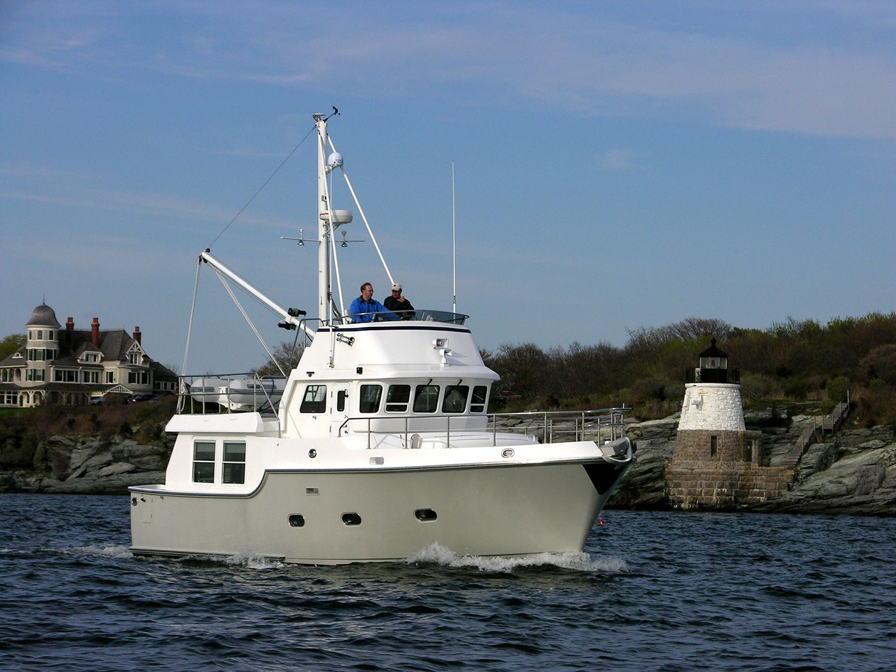

B-Atlas Boat Guide · NRDH-40
Nordhavn 40 Ocean Passagemaker
1998–2018
The Nordhavn 40 is a 39-foot-9-inch full-displacement ocean passagemaker developed by Pacific Asian Enterprises for long-range cruising by a couple. Its 50,000-pound displacement, 920-gallon fuel capacity, protected single-main shaft drive and heavy-duty systems are oriented toward passagemaking rather than marina-focused weekend use.

- Length
- 39.75 ft
- Beam
- 14.5 ft
- Draft
- 5.17 ft
- Hull behaviour
- Displacement
- Fuel
- Diesel
- Propulsion
- Shaft
- Engine configuration
- Single main diesel with separate auxiliary/wing engine on many boats; later factory spec lists 160 hp John Deere main
- Boat family
- Passagemaker
- Construction
- Fiberglass
Best for
- Couples planning serious offshore or transoceanic cruising
- Owners prioritizing range, redundancy and seaworthiness over speed
- Long-duration remote cruising where self-sufficiency matters
Trade-offs
- Very slow cruising speed
- High displacement and 5-foot-plus draft complicate haul-out and shallow-water use
- Ocean-grade systems increase maintenance, inspection and ownership complexity
- Large fuel capacity and passagemaking equipment are unnecessary for many regional cruisers
Known concerns
- No model-specific concern has been promoted to B-Atlas’s evidence threshold. This does not mean the model has no age-, condition- or hull-specific risks.
Inspection focus
- Inspect hull, deck, keel, rudder and structural systems to offshore-survey standards
- Review main engine, wing/auxiliary engine if fitted, generator, stabilizers and fuel-transfer systems
- Inspect shaft, stuffing box, steering and emergency-steering arrangements
- Review electrical, charging, battery and long-range fuel/water systems
- Confirm maintenance history for all passagemaking and safety equipment
Continue researching
Related boat models
Mainship 350 Trawler
39.75 ft · Semi-Displacement
Mainship 390 Trawler
39.75 ft · Semi-Displacement
Nordic Tugs 37
39.83 ft · Semi-Displacement
Silverton 34 Motor Yacht Aft Cabin Motor Yacht
39.83 ft · Planing
CHB 40 Double Cabin Double Cabin
40 ft · Semi-Displacement
Cape Dory 40 Explorer Explorer
40 ft · Planing / Modified-V
About this record
B-Atlas preserves uncertainty: missing information remains unknown rather than being treated as a negative. Specifications and guidance describe the model record; individual boats can differ by year, equipment, refit and condition.